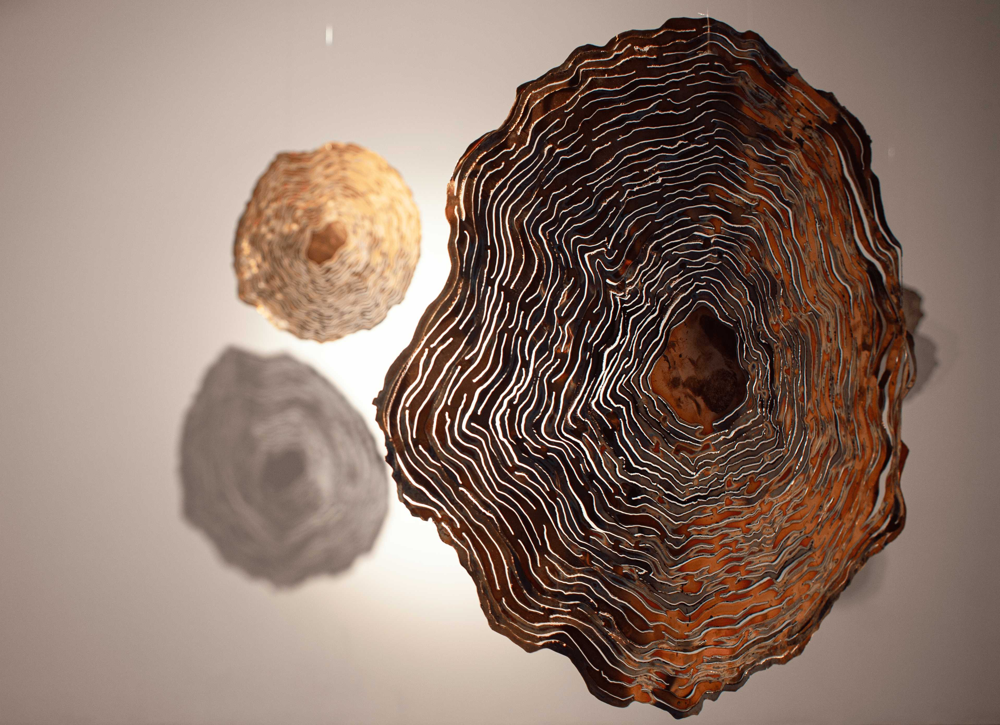

Projects
-

In The Ashes
Ongoing masters project about identity, second generation immigration, and reconnecting with Afghan heritage through writing and making. Includes the work “To Be?”.
-

Log Swing
Interactive installation: a swing with a metal log reflecting our relationship to forest and forestry.
-

Memories
Mobile installation of annual rings in copper, reflecting on clearcutting, memory, and ecological loss.
-

Funeral
Documentation photographs of a collective performance in Billingsfors, Sweden.
-

Firewood
Body of work consisting of firewood logs replicated in metal.
-

Geometrical Dimensions
Wall hanging objects and sculptures focused on materiality, patination, and geometrical aesthetics.